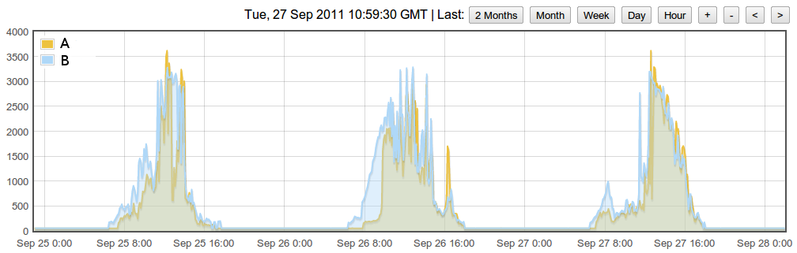

Overview
SMA is a German company who produces DC to AC inverters used with PV systems and other renewable energy sources (for grid connection etc.). Many models include a Bluetooth interface.
Importing data into Open Energy Monitor
Two approaches have been used to make this data available to Open Energy Monitor:
- Stuart Pittaway's code (see below) runs on Arduino / Nanode hardware.
- Using sma-bluetooth (see bottom of article) running on a suitable computer (e.g. a Raspberry Pi).
The choice of which one to use will be determined by the other components in use in your Open Energy Monitor system, and whether they can reliably communicate with the Inverter using the Bluetooth protocol.
Arduino / Nanode based
I've just ordered a Nanode in preparation for my contribution to the OpenEnergyMonitor project. (Oct 2011)
I'm going to be looking at interfacing a Nanode to the SMA SunnyBoy range of PV inverters (http://www.sma.de/en/products/solar-inverters/sunny-boy.html)
Newer inverters have a Bluetooth interface for accessing their internal readings, including measurements for DC voltage/current (from solar panels) mains AC, current, voltage and generation history.
Most of the inverters also contain an inbuilt relay which can be toggled via bluetooth by issuing the proper commands.
Unfortunately the protocols used via Bluetooth have not been released to the public, but I've managed to create a working prototype (written in C# also ported to Python) that exports PV data to my website (www.solarstats.co.uk) every 10 minutes.
Hopefully, OpenEnergyMonitor can eventually display PV performance on its gLCD display as well as the other measurements.
Update Feb 7th 2012
I've uploaded the first version of my monitoring code to Github https://github.com/stuartpittaway/nanodesmapvmonitor
Its a big sketch - compiles to nearly 30.5Kbytes !
https://github.com/stuartpittaway/nanodesmapvmonitor/blob/master/README on GITHUB has more detail.
Tested with SMA3000HF, 3000TL, 4000TL - but in theory should work with all Bluetooth enabled inverters. Please email me your success/failure stories and I'll update/fix!
You will need to modify the code (see APIKey.h for constants) to configure your passwords/keys for Pachube/SolarStats.co.uk and PVOutput.org sites and disable the ones you don’t need.
You can set your location's lat/long and the code will automatically determine when to start monitoring your PV system.
Once the code is uploaded to the Arduino/nanode device, make PIN14 high, and power on the board. This forces an automatic SMA inverter Bluetoth scan/discovery. Once the address has been retrieved, it is stored in EEPROM.
Connect a serial cable to the Nanode board (115000,8,n,1 baud rates) to see debug messages.
You should see messages like...
PWR UP
free mem=401
MAC=0004A32C1F88
DHCP
IP:192.168.1.102
GW:192.168.1.1
DNS:8.8.8.8
LOOP..
free mem=341
*Logon*
Fake time resync
*LOOP*
22:16:27 20120207
22:16:29 20120207
22:16:32 20120207
22:16:34 20120207
The code needs integration with OpenEnergyMonitor and heavy reduction in program space. Approximately 300 bytes of RAM are free during operation.
Its currently updating emonCMS, Pachube, SolarStats.co.uk and PVOutput.org at the same time

On Pachube, I'm uploading the free RAM and millis() counter once per minut. So far, I've managed to go 4 days without a restart.
You can see the output at
http://pvoutput.org/list.jsp?userid=4206
https://pachube.com/feeds/40789

Update 21 Feb
Happy to report my code and Nanode 5 have been running continuously for 10 days straight now without a single reboot or restart of the BT chip. I'm using Pachube to monitor uptime. http://binaereoptionen.over-blog.com/
You can see where the code "goes to sleep" (dotted line) then wakes up at sunrise to begin data capture - during this time, the Bluetooth and Ethernet are kept awake, although I plan to shut both of them down and put the CPU in sleep mode.
There's no RAM leaks. I'm also logging this to Pachube, and the value has been constant for 10 days.

Using sma-bluetooth on a Raspberry Pi etc.
Your chosen hardware will require a Bluetooth radio (a £5 GPB USB <-> Bluetooth adaptor has been used successfully). Known-working on Debian 8.0 i386.
- Compile and install the code at https://github.com/sma-bluetooth - verify standalone operation via the command line.
- Use the emonhub patches detailed in https://openenergymonitor.org/emon/node/10683 to import data into Open Energy Monitor.
- Improve this documentation.
Re: Interfacing with SMA SunnyBoy PV Inverters (Bluetooth)
Thanks for publishing this. As mentioned elsewhere you've saved us a great deal of time. I have just downloaded the sketches so tonight have cleared the decks to have a read, digest, and hopefully find places we can cut some corners off to add our other functionality. Hoping to have a test rig setup on the SMC5000A from this weekend.
Will keep you informed of progress Geoff
Geoff
Re: Interfacing with SMA SunnyBoy PV Inverters (Bluetooth)
So isn't there any software you could use to make this job easier? It sounds pretty tricky to me, I don't know if I could handle it myself without any form of support. I'd probably start though by installing an updated regcure to set some order in my system before engaging in a complex operation like this one.
Re: Interfacing with SMA SunnyBoy PV Inverters (Bluetooth)
Hi Stuart
Any chance you'll be publishing the C# code?
Thanks
Re: Interfacing with SMA SunnyBoy PV Inverters (Bluetooth)
No sure yet, I might be making a iPhone/Android app based on my code (ported over to Java) which I'm tempted to do as a commercial app.
Re: Interfacing with SMA SunnyBoy PV Inverters (Bluetooth)
just spent the past 1.5hrs building my nanode, serial number 628. blinking light working!!
its been several years since i did any soldering or work with micro contollers and pcbs, forgot what fun and just realised how expensive solder is now !!
Re: Interfacing with SMA SunnyBoy PV Inverters (Bluetooth)
I've ordered 2 bluetooth modules for interfacing to Nanode.
One from SparkFun which I know will work okay, and another from a chinese website for £5 :-)
Strangely enough, the one from China turns up in the UK in only 4 days, I'm still waiting for the USPS to deliver the SparkFun one!
The cheap bluetooth unit turns out to be a HC06 device - which is practically useless as I need to use it in master mode to connect to my SMA inverter.
I've found an interesting website at http://byron76.blogspot.com/2011/09/i-hope-you-have-good-time-soldering....
which indicates you can re-flash the bluetooth chips to add updated firmware onto them. I might give it a go!
Re: Interfacing with SMA SunnyBoy PV Inverters (Bluetooth)
Hi Stu
After our short 'chat' on the sma-bluetooth forum, as mentioned I'd be delighted to help with testing or code if you can use it.
Cheers, Geoff
Re: Interfacing with SMA SunnyBoy PV Inverters (Bluetooth)
I can confirm that the HC range of Bluetooth chipsets (based on CSR chips) can be re-programmed and have their firmware updated as per the above link.
My useless HC06 is now a HC05 model with a newer firmware - apart from the LED being on a different PIO pin, it's working fine.
I used the circuit from the website above, built on a bit of breadboard and 4 wires soldered to the Bluetooth board.
Re: Interfacing with SMA SunnyBoy PV Inverters (Bluetooth)
This sounds very exciting. I'm soon to have PV panels installed with an SMA inverter. It would be pretty cool to be able to be able to post the data up online using a Nanode+bluetooth. There would probably be a market for such a product since it would be cheaper than the £300 SMA web box. The Android app sounds pretty good too.
Although possibly an easier way to monitor output from a PV system is to use a CT sensor clipped round the 230V AC output from the inverter. I have setup a few PV monitoring systems using the emonTx, emonBase posting to emoncms system. The screen grab below shows two different PV systems installed in similar locations being compared. The advantage of the CT based monitoring system is that its not inverter specific and not relient on manufacture protocols (which will probably change over time).

What are the advantages interfacing directly with the inverter using bluetooth over monitoring the AC output from the inverter? After all its the AC output that you get paid for. Is it possible to get other interesting information other than power output by interfacing directly with the inverter?
All the best, Glyn.
P.S When posting in the future please could you use the forums rather than creating a random page on the site. Its much more organised that way!
Re: Interfacing with SMA SunnyBoy PV Inverters (Bluetooth)
When posting in the future please could you use the forums rather than creating a random page on the site. Its much more organised that way!
No problem, I was trying to put a link into the "Build" and that suggested to create a new page - wrists slapped accordingly
By interfacing directly with the inverter you can also get the DC stats from the panels, voltage and current, this in turn allows you to see the efficency of the inverter when compared to the ac output.
I agree that monitoring the ac cables using a clip is fine, however if this is to be a device open to the public and "easy" to install then I think the fewer clips and hunting down wiring the better, especially as the inverter cabling is likely to be enclosed in twin & earth cabling so you'd have to tease out a single core.
Ideally I want to control my hot water heating from surplus energy, but I also have the same problem as some of the forum members have in that my mains ac is blended with the PV inverter output (no seperate fuse/wiring panel for the mains AC for the PV setup).
I expect a lot of installations have been done in this way.